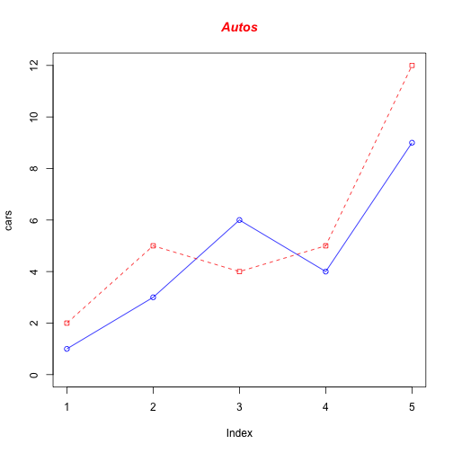

Intro
I'm not entirely sure how markdown files containing R code will look on this Pelican website. To make sure that plots I generate will actually show up, I've created a really simply plot on this R markdown file. Then I'll see if the plot will be successfully displayed on the webpage.
Let's cross our fingers.
Sample Data
The code below is from the R Markdown Cheat Sheet, which can be found on the R Markdown cheat sheet.
I also used sample code from Frank McCown.
# Define 2 vectors
cars <- c(1, 3, 6, 4, 9)
trucks <- c(2, 5, 4, 5, 12)
# Graph cars using a y axis that ranges from 0 to 12
plot(cars, type="o", col="blue", ylim=c(0,12))
# Graph trucks with red dashed line and square points
lines(trucks, type="o", pch=22, lty=2, col="red")
# Create a title with a red, bold/italic font
title(main="Autos", col.main="red", font.main=4)
